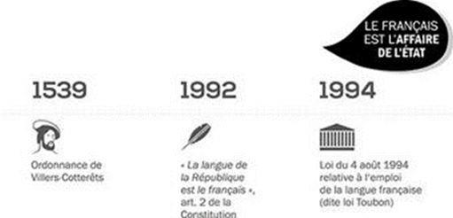
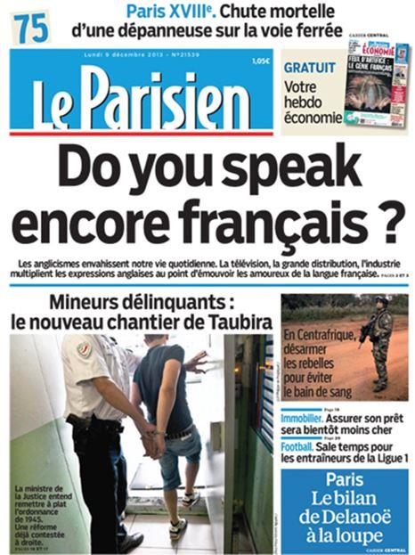

Depuis des décennies, des forces agissent au sein du système de l'Union européenne pour imposer l'anglais comme langue officielle unique. Il ne s'agit d'ailleurs pas toujours de la langue de Shakespeare, mais d'un anglais « cassé », maltraité, un charabia appelé « globish ». Les Britanniques eux-mêmes en souffrent. Cette colonisation linguistique est parfaitement cohérente avec le contenu néolibéral des traités qui fondent le système de l'Union européenne. Car le globish est la langue de l'Empire et de son idéologie contemporaine qu'est le néolibéralisme et des politiques qui en découlent.
Rien n'est plus efficace, pour accompagner et imposer ces politiques, que de les exprimer au moyen de quelques centaines de notions en globish. Elles sont en quelque sorte naturalisées et se veulent comme des évidences, elles servent de ralliement aux conjurés. Aucune réflexion, aucun débat ne sont plus nécessaires, dès lors que les mots magiques ont été prononcés. Cette déliquescence de la pensée explique pour une part la médiocrité des politiques menées par le système de l'Union européenne et leur rejet croissant parmi les peuples des États membres.
La sortie du Royaume-Uni du système de l'Union européenne, décidée souverainement par le peuple britannique au moyen du référendum, paradoxalement, renforce le globish au sein des institutions communautaires. Pourtant, sur le plan quantitatif, rien de justifie plus que l'anglais soit la langue dominante du système de Bruxelles, puisque deux pays seulement en ont fait leur langue officielle. Le premier est l'Irlande, dont la première langue est l'irlandais. Malte est le second, dont la première langue est le maltais. Il n'existe plus aucun pays, au sein du système de l'Union européenne, dont l'anglais soit la première langue officielle ! Ainsi, après le Brexit, seuls 7 millions de personnes (2 % des habitants de l'Union européenne) ont l'anglais comme langue maternelle. La persistance de cette colonisation linguistique a donc des causes qualitatives, liées d'abord au fait que le globish est le véhicule idéal pour inoculer l'idéologie néolibérale, et ensuite pour faire barrage à la langue française.
Car à part l'anglais, seul le français possède une dimension universelle. Le français est bien davantage qu'un simple instrument de communication. C'est la langue du pays des droits de l'Homme, des Lumières, de la Révolution française. C'est une langue-culture à laquelle certains veulent barrer la route pour mieux imposer le globish qui sert les intérêts économiques et géopolitiques de l'Empire.
Une lente strangulation linguistique
Le statut des langues des pays membres, au sein du système de l'Union européenne, est piétiné. En premier lieu, ce système ne respecte pas les constitutions nationales en matière linguistique. Concernant la Constitution française, son article 2 stipule : « La langue de la République est le français ».
C'est dans cette langue que les représentants de la République doivent s'exprimer dans les institutions internationales. Pourtant certains, par lâcheté ou par accord idéologique avec l'Empire, sabordent leur propre langue et cèdent trop facilement aux pressions. En second lieu, le système de Francfort ne respecte pas ses propres règles. Ainsi, on compte aujourd’hui vingt-quatre « langues de communication officielle » dans le système de l'Union européenne. Selon la Charte des droits fondamentaux de l'Union européenne du 26 octobre 2012, à l'article 22 : « l'Union respecte la diversité culturelle, religieuse et linguistique ». Quant à l'article 41, il stipule : « Toute personne peut s'adresser aux institutions de l'Union dans une des langues des traités et doit recevoir une réponse dans la même langue ». Ces beaux principes ne sont plus que de l'encre sur du papier. En troisième lieu, le règlement européen n° 1 du 6 octobre 1958, portant fixation du régime linguistique de la Communauté économique européenne, qui instaure au moins trois « langues de travail » (allemand, anglais, français), n’en utilise généralement de fait plus qu'une seule (l'anglais).
Dans la pratique, la Commission européenne, de façon totalement illégale et illégitime, utilise l’anglo-américain globish comme « langue commune » de travail. Cette action subreptice, sournoise, vise, à marche forcée, à créer une politique du fait accompli par une lente strangulation de toutes les langues qui ne sont pas le globish. On en vient alors à s’habituer à l'inacceptable et à considérer que ces actes délictueux sont désormais la norme et qu'ils sont irréversibles. Un véritable changement de langue s'opère afin de mieux consolider l’hégémonie exercée sur le continent.
Cette évolution linguistique du système de l'UE crée pour chaque langue des pays membre (et pour les autres) le danger de voire consacrée la « co-officialité » de l'anglais dans tous les pays européens. Partout, particulièrement en France, des pressions s’exercent pour remplacer la langue nationale là où c'est possible : entreprises, administrations, publicité, universités, recherche, musique, cinéma, etc.
Respecter l'identité des peuples passe par le respect de leur langue nationale
Il faut se réhabituer à parler à nouveau nos langues et ne plus s’habituer à travailler presque exclusivement en globish. Les fonctionnaires français à Bruxelles, Strasbourg, Luxembourg, Francfort doivent être des modèles. À eux de s'opposer à Mme Ursula von der Leyen, la présidente de la Commission européenne, qui donne le mauvais exemple en n’utilisant systématiquement que l’anglais. Nos ministères ne doivent plus accepter de travailler sur des documents de l’UE non traduits, et d’y répondre uniquement en anglais. Partout et tout le temps il faut parler et écrire en français, cette action ayant vocation à encourager tous les pays membres à faire de même.
Pour défendre la liberté linguistique, le Haut Conseil international de la Langue française et de la Francophonie (HCILFF), réseau informel qui ne peut ester en justice, via des associations comme Avenir de la Langue française (ALF), a déposé un recours en Cour de Justice de l’Union européenne (CJUE), contre l’usage illégal et illégitime de l’anglais comme « langue commune » de fait par le Parquet européen et la Commission européenne.
Chaque fonctionnaire français, chaque citoyen est invité à apporter sa pierre à l'édifice. Par exemple, lorsque des personnes qui, voulant s’exprimer en français comme le droit leur en est reconnu, sont fermement morigénées et priées de passer à l’anglais « comme tout le monde ». Les personnes concernées doivent écrire leur témoignage avec la date, les lieux, les noms des protagonistes, les propos échangés et signer. Les plus courageux peuvent même filmer la scène avec leur téléphone portable… Ces preuves seront non seulement utiles, mais vitales si nous voulons gagner ce combat.
Le moment est venu de recadrer les institutions délinquantes de l’UE afin qu’elles reviennent, sans délai, à l’application des normes linguistiques européennes elles-mêmes. Le plurilinguisme doit être rétabli dans les institutions de l’UE, avec le retour de l’allemand et du français comme langues de travail effectives. Les autorités françaises doivent sortir de leur somnolence pour mettre un terme à la dérive linguistique uniformisatrice de l'UE. Encore une fois, le glissement vers la langue unique est un facteur d'uniformisation et d’écrasement des pensées et des politiques. Il s'agit de dire « non » aux menées impériales, malheureusement soutenues par certains milieux français.
C'est un « écocrime » de l’Union européenne qui est à l'œuvre contre la diversité des langues et cultures, et donc contre la civilisation. L’effacement de la diversité linguistique et culturelle nuit autant à la culture française, européenne et mondiale, que la destruction de la biodiversité nuit au monde naturel. L’Union européenne ne doit pas être un agrégat de provinces de l’Empire, à unir par l’anglo-américain. Disons « non » à la colonisation linguistique de la France et de l’Europe.
Partager cette page